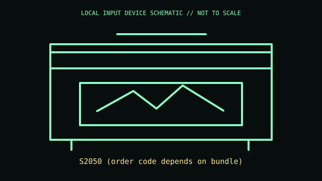

[ IMAGING AND AUDIO-CAPTURE PERIPHERALS // IDENTIFIED COMPONENT ]
Kodak Alaris S2050 Scanner
Desktop duplex production scanner with automatic document feeder and image processing.

MODEL IDENTIFICATION: S2050 (order code depends on bundle). Confirm the printed SKU, revision, bundle, region, and included accessories before repair or compatibility claims.
Model specifications
| Catalog leaf | Imaging and audio-capture peripherals |
|---|---|
| Exact model / identifier | S2050 (order code depends on bundle) |
| Mechanism and primary specifications | Rated throughput up to 50 ppm / 100 ipm for specified conditions; 80-sheet ADF; USB 3.1 Gen 1; optical resolution and duty cycle are model-specific. |
| Compatibility and interface caveats | Uses Kodak Alaris driver/software package; verify exact bundle, region, and host driver support before connecting to current OS. Throughput depends on document size/settings. |
| Revision identification | Record the full label and software/firmware revision. Similar product-family names may use different protocols, components, connectors, or bundled accessories. |
Preservation and service
Clean imaging glass, feed rollers, and separation module per maintenance guide; record page count and replace wear parts by usage.
Separate observed condition and test setup from vendor-published specifications; record host OS, driver/app version, cables, adapters, and accessories.
Primary manufacturer sources
- Kodak Alaris S2050 productManufacturer documentation; verify the exact SKU, revision, region, and accessories against the unit label.
- Kodak Alaris scanner supportManufacturer documentation; verify the exact SKU, revision, region, and accessories against the unit label.
Manufacturer support pages can change; retain the applicable manual and its revision in the physical equipment record.